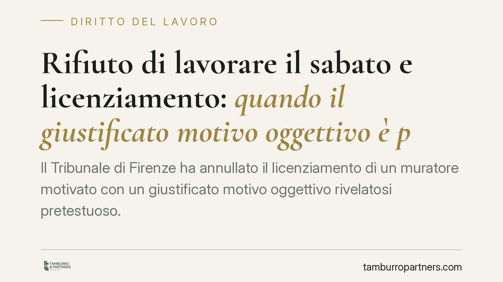

Rifiuto di lavorare il sabato e licenziamento: quando il giustificato motivo oggettivo è pretestuoso
Il Tribunale di Firenze ha annullato il licenziamento di un muratore motivato con un giustificato motivo oggettivo rivelatosi pretestuoso. Mancavano le prove documentali della crisi aziendale e del tentativo di ricollocamento. La decisione ricorda un principio consolidato: quando il datore recede per ragioni economiche, è lui a dover dimostrare che quelle ragioni esistono davvero e che non c'erano alternative.

Il caso: dal rifiuto del sabato al licenziamento
Un operaio edile viene licenziato con la formula del giustificato motivo oggettivo, ossia una ragione economica o organizzativa estranea alla condotta del lavoratore. La vicenda, però, nasce da un rifiuto del dipendente di prestare lavoro al sabato.
Qui sta il nodo. Il datore non contesta l'inadempimento sul piano disciplinare (che avrebbe imposto la procedura di garanzia dell'art. 7 dello Statuto dei lavoratori), ma qualifica il recesso come oggettivo, adducendo la chiusura dei cantieri. Il Tribunale di Firenze, Sezione Lavoro, ha ritenuto il motivo pretestuoso: mancavano le prove documentali della cessazione dell'attività e del tentativo di ricollocare il lavoratore altrove.
Gli estremi della sentenza (numero e data) sono da verificare sulle fonti ufficiali prima di ogni utilizzo processuale.
Inquadramento normativo: chi deve provare cosa
Il licenziamento individuale è disciplinato dalla L. 604/1966. L'art. 3 richiede, per il giustificato motivo oggettivo, ragioni inerenti all'attività produttiva, all'organizzazione del lavoro e al suo regolare funzionamento. L'art. 5 pone l'onere della prova a carico del datore di lavoro: è l'impresa a dover dimostrare l'effettiva sussistenza del motivo addotto.
A questo si aggiunge l'obbligo di repêchage, cioè di ricollocamento: prima di licenziare per ragioni oggettive, il datore deve verificare l'impossibilità di adibire il lavoratore a mansioni equivalenti o, se compatibili, inferiori. Si tratta di un'elaborazione giurisprudenziale costante, che completa la prova richiesta dall'art. 5. Senza documentazione né sulla crisi né sul tentativo di ricollocamento, il licenziamento non regge.
È centrale distinguere il piano disciplinare da quello oggettivo. Il primo riguarda condotte del lavoratore e impone la procedura dell'art. 7 dello Statuto (contestazione, difesa, termini). Il secondo riguarda scelte organizzative dell'impresa. Trasformare un problema disciplinare in un motivo oggettivo per aggirare le garanzie è proprio ciò che il giudice ha sanzionato.
Il regime sanzionatorio: attenzione alla data di assunzione
Le conseguenze dell'annullamento dipendono dalla data di assunzione del lavoratore, discrimine introdotto dal D.Lgs. 23/2015 (contratto a tutele crescenti).
Per i rapporti sorti prima del 7 marzo 2015 si applica l'art. 18 della L. 300/1970. In caso di manifesta insussistenza del fatto posto a base del giustificato motivo oggettivo, il giudice può disporre la cosiddetta reintegra attenuata (art. 18, co. 4): reintegrazione nel posto e indennità risarcitoria commisurata all'ultima retribuzione globale di fatto maturata dal licenziamento alla reintegra, entro il tetto massimo di dodici mensilità.
Per i rapporti sorti dal 7 marzo 2015 si applica invece il D.Lgs. 23/2015, che prevede una tutela prevalentemente indennitaria: la reintegra resta l'eccezione e il ristoro è di regola economico, graduato in base all'anzianità di servizio. La qualificazione del regime, quindi, non è un dettaglio: incide direttamente sull'esito.
Implicazioni pratiche
Per il datore di lavoro la lezione è netta: le ragioni economiche vanno documentate, non affermate. Contratti persi, chiusura di commesse, riorganizzazioni interne devono risultare da atti verificabili, così come il tentativo di ricollocamento.
Per il lavoratore, il messaggio è che un licenziamento presentato come oggettivo può celare una reazione a un comportamento: in quel caso la mancanza di prova documentale diventa la principale linea di difesa.
Cosa fare in concreto
- Datore: prima di un licenziamento oggettivo, raccogli e conserva la documentazione che attesta la crisi o la riorganizzazione, e traccia per iscritto le verifiche di ricollocamento.
- Datore: se il problema è una condotta del lavoratore, segui la procedura disciplinare dell'art. 7 St. Lav.; non mascherarla da motivo oggettivo.
- Lavoratore: impugna il licenziamento entro 60 giorni dalla ricezione con atto scritto stragiudiziale (art. 6 L. 604/1966, come modificato dalla L. 183/2010).
- Lavoratore: deposita il ricorso in Tribunale o presenta richiesta di conciliazione o arbitrato entro i successivi 180 giorni, a pena di inefficacia dell'impugnazione.
- Entrambi: verifica subito la data di assunzione, perché determina il regime applicabile (art. 18 St. Lav. o D.Lgs. 23/2015) e le tutele in gioco.
---
Contributo informativo a cura di Tamburro & Partners - Avv. Giuseppe Tamburro. Non costituisce parere legale.
Ogni storia di lavoro ha i suoi tempi.
Se gestisci HR e vuoi un confronto su contenzioso, ispezioni o licenziamenti, scrivi allo studio. Ti rispondiamo entro un giorno lavorativo.